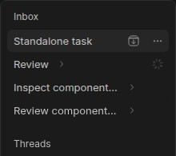
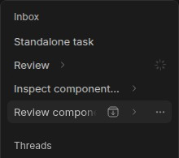

#5909 · Sidebar hover actions shift around the disclosure control
Trusted base: 809fea25fdbf4b59150c89ffa817ef8f47815756 from origin/main.
REPRODUCED · Root-cause confidence: high · Reproduction label: confirmed-repro
1. TL;DR
The Archive button is not horizontally aligned across otherwise comparable thread rows. The browser measured a 30 px right inset on a leaf row and a 58 px inset on colliding parent rows, leaving a 2 px gap between Archive and disclosure. The parent disclosure follows the title, and a resize-observer calculation inserts extra margin before the trailing menu to make room for it; this pushes Archive left. A separately built clean checkout reproduced the same geometry and expected regression-test failure. This report verifies the existing implementation, not the submitted redesign, and does not claim to have reproduced an actual accidental archive.
2. Claims vs findings
| Claim | Finding | Evidence and limits |
|---|---|---|
| Archive changes horizontal position on parent rows. | Verified | Both clean builds produced 30 px versus 58 px right insets, depending on title length and available width. |
| Disclosure can be only 2 px from Archive. | Verified | Measured between button rectangles, not just visible SVG strokes, in four parent samples per run. |
| A collapsed parent has no visible child count. | Verified current behavior | The rendered parent text contains the title without a numeric count. Adding a count is a proposed feature, not a separate proven regression. |
| A child's activity is displayed with the parent's status glyph. | Verified mechanism | The source explicitly ORs hidden-child runtime activity into the parent's trailing indicator. The fixture also includes an idle parent with one active child; its displayed status is recorded below. |
| An imprecise click can archive the parent and descendants. | Not exercised end to end | Archive is a real core action, but no destructive action was executed. Confirmation defaults to enabled in the action provider; the cascade was not tested with a running server. |
| The proposed redesign fixes every pointer, keyboard, touch, and accessibility case. | Unverified | No submitted branch, patch, or test was run. The open PR received static diff review only. |
3. Environment
- bb 0.46.1 source at the full trusted commit above; Linux x86_64; Node 22.19.0; pnpm 9.15.0.
- Two detached clean checkouts of the same commit, named
baseandverify, with separate dependencies and independently built Ladle outputs. - Synthetic thread-list bootstrap data, in-memory query clients and preferences. No real projects, provider sessions, threads, account data, server, or database participated.
- Each checkout completed the normal frozen install and Turbo build: 67 successful build tasks each. The focused existing thread-row suite passed all 84 tests.
- Source fixture servers used ports 45109 and 45110 in the build environment. Static artifacts were then served on loopback ports 45109 and 45110 on a separate browser host through an isolated temporary Node server.
- Browser Automation's local headless Chrome 149.0.7827.55 backend drove the pages. It reported no native hover-capable pointer. The test switches only CSS hover/pointer media predicates to their desktop values; spacing, positioning, content, and production component logic remain unchanged. This emulates desktop styles rather than claiming a physical mouse or a Safari check.
- Ladle removes unknown query parameters. The test therefore sets the fixture container width in the DOM after navigation and waits for fonts and resize-observer delivery before measuring.
4. Minimal reproduction
The only source changes are synthetic fixture data in an existing story and adding the thread-list directory to the story stylesheet's Tailwind scan. Production components are unchanged. The latter is important: omitting plugin CSS would make this a misleading reproduction.
- Create two fresh checkouts of the trusted base and install/build each:
WORK=$(mktemp -d) git worktree add --detach "$WORK/base" 809fea25fdbf4b59150c89ffa817ef8f47815756 git worktree add --detach "$WORK/verify" 809fea25fdbf4b59150c89ffa817ef8f47815756 cd "$WORK/base" pnpm install --frozen-lockfile --prefer-offline pnpm exec turbo run build
- Apply the following fixture-only patch to both checkouts. This patch was authored from trusted repository fixtures, not copied from an issue attachment or submitted PR.
Complete fixture patch
diff --git a/apps/app/.ladle/ladle.css b/apps/app/.ladle/ladle.css index 8ba69052b..cc2a64ae4 100644 --- a/apps/app/.ladle/ladle.css +++ b/apps/app/.ladle/ladle.css @@ -10,6 +10,7 @@ @source "../../../plugins/provider-usage"; @source "../../../plugins/secrets"; @source "../../../plugins/provider-codex"; +@source "../../../plugins/thread-list"; .ladle-main { padding: 0; diff --git a/apps/app/src/components/sidebar/PluginThreadList.stories.tsx b/apps/app/src/components/sidebar/PluginThreadList.stories.tsx index 7247e3a98..003bfd9ef 100644 --- a/apps/app/src/components/sidebar/PluginThreadList.stories.tsx +++ b/apps/app/src/components/sidebar/PluginThreadList.stories.tsx @@ -62,18 +62,19 @@ function inboxEntry( } const INBOX_THREADS = [ - inboxEntry("thr_flaky", "Fix flaky composer test", 900, false), - inboxEntry("thr_release", "Release notes draft", 800, true), - inboxEntry("thr_ambient", "Ambient shader palette", 700, false), - inboxEntry("thr_digest", "Digest: GitHub activity", 600, true), - inboxEntry("thr_pins", "File Pins menu alignment", 500, false), - inboxEntry("thr_places", "Saved Places import", 400, true), - inboxEntry("thr_catalog", "Plugin catalog refresh", 200, false), - inboxEntry("thr_catalog_shots", "Catalog screenshots", 190, false, { - parentThreadId: "thr_catalog", + inboxEntry("thr_leaf", "Standalone task", 900, false), + inboxEntry("thr_short", "Review", 800, false), + inboxEntry("thr_medium", "Inspect component layout", 700, false), + inboxEntry("thr_long", "Review component layout and keyboard navigation states", 600, false), + inboxEntry("thr_short_child", "Worker one", 790, false, { + parentThreadId: "thr_short", + runtime: { displayStatus: "active" }, }), - inboxEntry("thr_catalog_copy", "Catalog descriptions", 180, true, { - parentThreadId: "thr_catalog", + inboxEntry("thr_medium_child", "Worker two", 690, false, { + parentThreadId: "thr_medium", + }), + inboxEntry("thr_long_child", "Worker three", 590, false, { + parentThreadId: "thr_long", }), ]; @@ -167,7 +168,7 @@ function ThreadListSidebar() { return ( <SidebarThreadEntriesProvider navigation={data}> <SidebarProvider defaultOpen className="min-h-0 w-auto"> - <div className="flex h-[560px] w-72 shrink-0 flex-col overflow-hidden rounded-lg border border-sidebar-border bg-sidebar text-sidebar-foreground"> + <div style={{ width: Number(new URLSearchParams(window.location.search).get("width") ?? 288) }} className="flex h-[560px] shrink-0 flex-col overflow-hidden rounded-lg border border-sidebar-border bg-sidebar text-sidebar-foreground"> <SidebarContent> <PluginThreadList replacement={replacement} onNavigate={() => {}} /> </SidebarContent> @@ -249,7 +250,8 @@ function OpenThreadControls() { const READ_STATUS_PREFERENCES = { organizationMode: "chronological", - groupByReadStatus: true, + groupByReadStatus: false, + collapsedThreads: ["thr_short", "thr_medium", "thr_long"], }; export function InboxReadStatus() { - Serve the story on an unused port, then navigate the Browser Automation page to
/?story=sidebar--thread-list--inbox-read-status&mode=preview:pnpm exec turbo run storybook --filter=@bb/app -- --port 45109
For the clean-checkout repeat, use port 45110. The investigation also built each isolated story as static assets so the existing browser host could render them without needing access to a live core:
pnpm --filter @bb/app exec ladle build \ --stories src/components/sidebar/PluginThreadList.stories.tsx \ --outDir static-5909
The direct Ladle build is an investigative bypass because this checkout does not register
storybook:buildas a Turbo task; the normal upstream build had already passed. - Run the following script through
bb browser-automation run, using the current browser page's origin. It protects one observable invariant: equal right insets for Archive across leaf and parent rows. It does not assert a particular replacement design, add a production seam, or mock layout measurements.Complete browser regression test
const page = await browser.getPage("main"); const currentUrl = await page.$eval("body", () => window.location.href); const origin = new URL(currentUrl).origin; const samples = []; for (const width of [220, 288, 360]) { await page.goto(`${origin}/?story=sidebar--thread-list--inbox-read-status&width=${width}&mode=preview`); await page.waitForSelector("a[href*=thr_leaf]"); await page.$eval('main [style^="width:"]', (sidebar, width) => { sidebar.style.width = `${width}px`; }, width); await page.$eval("body", () => { const adapt = (rules) => { for (const rule of rules) { if (rule.type === CSSRule.MEDIA_RULE) { rule.media.mediaText = rule.media.mediaText .replace(/\(hover:\s*none\)/g, "(min-width: 99999px)") .replace(/\(hover:\s*hover\)/g, "(min-width: 0px)") .replace(/\(pointer:\s*coarse\)/g, "(min-width: 99999px)") .replace(/\(pointer:\s*fine\)/g, "(min-width: 0px)"); } if (rule.cssRules) adapt(rule.cssRules); } }; for (const stylesheet of document.styleSheets) adapt(stylesheet.cssRules); }); await page.$eval("body", async () => { await document.fonts.ready; }); await page.$eval('main [style^="width:"]', async (sidebar, width) => { sidebar.style.width = `${width + 1}px`; await new Promise((resolve) => requestAnimationFrame(() => requestAnimationFrame(resolve))); sidebar.style.width = `${width}px`; await new Promise((resolve) => requestAnimationFrame(() => requestAnimationFrame(resolve))); }, width); for (const id of ["thr_leaf", "thr_short", "thr_medium", "thr_long"]) { const selector = `a[href$="/${id}"]`; await page.hover(selector); const sample = await page.$eval(selector, async (link) => { await new Promise((resolve) => requestAnimationFrame(() => requestAnimationFrame(resolve))); const row = link.closest("[data-sidebar-rename-row]"); const archive = row.querySelector('button[aria-label="Archive"]'); const toggle = row.querySelector('button[aria-expanded]:not([data-thread-actions-trigger])'); if (!archive) throw new Error("Fixture is missing its real Archive action"); const rowRect = row.getBoundingClientRect(); const archiveRect = archive.getBoundingClientRect(); if (archiveRect.width === 0) throw new Error("Archive is not laid out; desktop media setup failed"); const toggleRect = toggle?.getBoundingClientRect(); return { id: link.getAttribute("href").split("/").at(-1), rowWidth: rowRect.width, archiveRightInset: rowRect.right - archiveRect.right, archiveLeft: archiveRect.left, archiveRight: archiveRect.right, toggleLeft: toggleRect?.left ?? null, toggleRight: toggleRect?.right ?? null, gap: toggleRect ? Math.max(archiveRect.left - toggleRect.right, toggleRect.left - archiveRect.right, 0) : null, clearance: row.querySelector("[style*=bb-sidebar-disclosure-clearance]")?.getAttribute("style") ?? null, statusLabels: Array.from(row.querySelectorAll("[data-sidebar-thread-trailing-indicator] [aria-label]"), (glyph) => glyph.getAttribute("aria-label")), text: row.textContent, }; }); samples.push({ width, ...sample }); } } console.log(JSON.stringify(samples, null, 2)); const unstable = samples.filter((sample) => { const leaf = samples.find((candidate) => candidate.width === sample.width && candidate.id === "thr_leaf"); return Math.abs(sample.archiveRightInset - leaf.archiveRightInset) > 1; }); if (unstable.length > 0) { throw new Error(`Archive alignment regression: ${unstable.length} parent samples differ from their leaf control`); }
Expected: all comparable rows at a given width have the same Archive right inset. Actual: four parent samples differ from the leaf by 28 px in each run:
width row Archive right inset disclosure gap 220 thr_leaf 30 none 220 thr_short 30 66.05 220 thr_medium 58 2.00 220 thr_long 58 2.00 288 thr_leaf 30 none 288 thr_short 30 134.05 288 thr_medium 30 18.83 288 thr_long 58 2.00 360 thr_leaf 30 none 360 thr_short 30 206.05 360 thr_medium 30 90.83 360 thr_long 58 2.00 Both runs: Error: Archive alignment regression: 4 parent samples differ from their leaf control Idle parent thr_short with active child: aria-label="Thread working" in all three widths.
The 220, 288, and 360 px measurements refer to the fixture's sidebar container. Scroll/content padding makes the measured row rectangles 202, 270, and 342 px wide. Insets are relative to each row's own right edge. Text differs from the reporter's fixture, so the exact title-length crossover is not asserted to be identical.


These are actual browser captures, cropped to synthetic sidebar content and converted from JPEG to PNG without layout or pixel-content edits.
5. Root cause
The parent toggle is a sibling immediately after the title, while quick actions occupy an absolutely positioned trailing overlay. A long title therefore puts the disclosure inside the overlay's default action area.
{parentOptions && hasChildren ? (
<SidebarChildToggleChevron
isCollapsed={isParentCollapsed}
expandLabel={`Expand ${labelTitle} threads`}
...
/>
) : null}
The overlap calculation returns a clearance offset when the toggle intersects the resting quick-action area:
const gap = Number.parseFloat(getComputedStyle(controls).columnGap) || 0; return toggleRect.right + gap > restingActionsLeft ? Math.ceil(triggerRect.left - toggleRect.left) : null;
The trailing overlay applies that clearance as margin before the menu trigger. Its right edge stays pinned, so the primary action moves left. The recorded colliding rows have --bb-sidebar-disclosure-clearance: 28px, explaining the exact 58 − 30 = 28 px displacement. Row controls use a gap-0.5 spacing, which is the observed 2 px between adjacent button boundaries.
This is a layout-policy conflict, not an archive API error: inline disclosure, unreserved title width, and stable trailing destructive actions are being made to share the same space. The current calculation resolves collision by moving the destructive action, rather than by keeping the two jobs in separate stable regions.
The status concern has a separate, explicit mechanism: hidden-child activity is ORed into the parent's trailing indicator. This is existing aggregate-status behavior; changing its presentation is a design choice. The child count is available internally but is not rendered as a visible number in the current parent title/toggle path.
For the destructive-action limit, the core Archive action delegates to the lifecycle handler; the provider defaults confirmation to true and uses the archive-with-children mutation. This was traced, not invoked.
6. Proposed fix
Keep the destructive trailing actions in the leaf row's stable slot, and give disclosure its own non-colliding hit target. Do not merely pin Archive to one side of an inline title-following toggle, since it would still move with the title. The choice of leading disclosure placement, provider-icon replacement, count format, and child-status presentation requires product/UI review. Preserve keyboard accessibility, touch target sizing, expanded-parent behavior, provider-icons-off alignment, customization, and nested-row indentation.
No autopilot fix branch or duplicate PR was created: open PR #5910 already links this issue. The focused geometry test in this report is suitable evidence for that review.
7. PR review — static only
get-bb/bb #5910
GitHub metadata confirms an open PR whose body links issue #5909. Its untrusted diff removes the clearance hook and inline toggle from thread rows, introduces a leading disclosure component and visible child counts, and separates hidden-child work from the row's own trailing status. Those changes target the verified mechanism. The diff spans six files and includes a broader presentation redesign; it is not being substituted for a simple autopilot patch.
Review result: relevant candidate fix, not runtime-approved. Only trusted main and this report's own fixture/test changes were built or run. No PR branch or submitted test was checked out or executed. Touch/Safari behavior, keyboard focus, screen-reader descriptions, provider-icon swapping, and title truncation under the new design remain for the PR's own verification. A referenced fork prototype was not fetched or executed.
8. Related issues and history
Repository metadata classifies #3821 and #5125 as bugs concerning this interaction area. Trusted history includes 115974a34, which lets parent titles use hidden quick-action space. This report treats the movement and proximity as the defect, without claiming that every part of the proposed redesign is already approved product behavior.
9. Verification — second clean checkout
The same agent repeated the reproduction; this is not an independent-agent review. The verify checkout was created detached directly at the recorded trusted commit, then received only the same fixture patch. It used a separate frozen dependency install, separate 67-task successful Turbo build, separate static story build, and a different loopback origin on port 45110. Its query client and preferences were recreated in memory. No application data directory or real core was used in either run.
cd "$WORK/verify" pnpm install --frozen-lockfile --prefer-offline pnpm exec turbo run build pnpm --filter @bb/app exec ladle build \ --stories src/components/sidebar/PluginThreadList.stories.tsx \ --outDir static-5909 Browser Automation: navigate to the second fixture's origin on port 45110; run the exact geometry script from section 4. Expected failing assertion on unchanged production code: Error: Archive alignment regression: 4 parent samples differ from their leaf control
All 12 measured sample records are identical across the two final runs, including the 30/58 px action insets, the four 2 px gaps, the 28 px clearance offsets, and the idle parent’s “Thread working” accessible status label. Both runs fail the alignment assertion for the intended reason. No production source was changed.
Harness corrections made before the final runs: explicit desktop media predicates, forcing a resize after styles settle, and using the bootstrap fixture's nested runtime display-status field rather than a sidebar-only flattened field. These avoid hidden zero-width actions, a missing observer delivery, and a falsely idle synthetic child. Final evidence uses only the corrected harness.
10. Appendix and limits
Focused existing suite, run through Turbo:
pnpm exec turbo run test --filter=bb-plugin-thread-list -- app/rows/ThreadRow.test.tsx Test Files 1 passed (1) Tests 84 passed (84) Tasks 7 successful, 7 total
Existing tests pass while the new browser geometry assertion fails, demonstrating a missing layout invariant rather than a baseline unit-test failure. No production fix was made, so no post-fix pass is claimed.
Code permalinks were checked against the recorded commit. A final fetch found no later main commit affecting the thread-row component. Screenshots were inspected before publication. Raw command output, the complete fixture patch, and the browser test are retained locally; the public HTML embeds the test and patch because the reports repository forbids publishing standalone logs, scripts, or test directories.
Trust boundary: issue text and submitted diffs were treated as untrusted claims. No issue command, external attachment, linked branch, submitted patch, or submitted test was fetched or run. Only trusted main and locally authored fixture/test changes were executed. All data shown is synthetic.